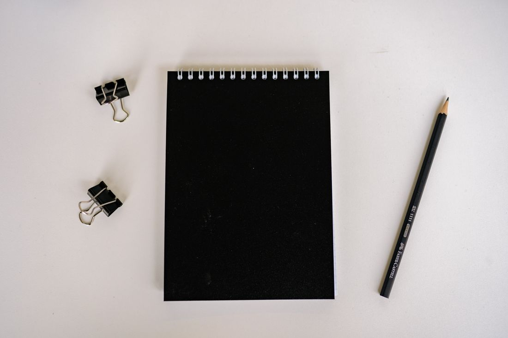

• • •
• • •
• • •
• • •
• • •
Caderno
pontilhado
Miolo pontilhado, valor fictício.
R$ 24,00Adicionar à lista ↗
Cadernos, escrita e pequenos acessórios para transformar vontade em rascunho. Explore a vitrine e prepare uma consulta de exemplo.
Monte sua lista ↗Um traço, uma nota, uma página cheia de possibilidades. Esta vitrine ajuda a conhecer itens simples antes de consultar a loja.
Quatro itens demonstrativos, com valores fictícios. As fotos são de referência e não identificam produtos reais da loja.
Miolo pontilhado, valor fictício.
Folhas lisas, valor fictício.
Traço fino, valor fictício.
Conjunto demonstrativo, valor fictício.
Escolher papel também é imaginar o que cabe nele. A fotografia mostra uma referência, não um item disponível na loja fictícia.
Explorar a lista ↗
Escolha um item e uma quantidade para consultar um valor total fictício. Nenhuma compra, estoque ou entrega é confirmada aqui.
Demonstração fictícia. Loja, produtos, preços e contato são exemplos; nenhuma compra será recebida.